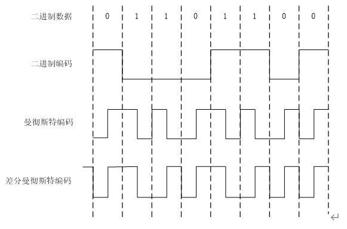

1.数据分为
2.信号要在
3.将数字信号转换成模拟信号，最基本的3 种方式是
4.根据所传输的信号不同，数据传输可以分为
5.对于模拟信号，采用的复用技术是
6.常见的导向传输介质有
7.物理层标准定义了通信接口的
1.(A)是距离传输介质最近的层。
2.物理层关心物理介质上(D)的传输。
A.程序
B.对话
C.协议
3.在(C)传输中，比特是同时发送，在独立的线路上传输的。
A.异步串行
B.同步串行
4.如果一个信号的带宽是5kHz ，而其最低频分量是52kHz，那么其最高频分量频率为
(D)。
A. 5kHz
B. 5kHz
C. 47kHz
5.在数据传输中，数据只能沿着一个方向传递，这种方式称为(A)
6.在(D)传输中，比特是依次通过一条线路传输的。
A.异步串行
B.同步串行
C.并行
7.多路信号共用一条链路的技术称为(A)。
8.EIA-232 标准规定0 必须是(D)。
A. 大于-15V
B. 小于-15V
C. -15V ~3 V 之间
9.ElA-232 标准接口有(C)针。
A.20
B.24
10.ElA-232 标准中，第(A)针用来发送数据。
11. EIA-232 标准中数据针上-12V 意味着(A)。
1. 简述信息、数据和信号三者之间的关系。
通信的目的是将信息从一端发送到另一端。语言、文字、图像、颜色、声音、自然景物等都是信息的表现形式。信息在被传输前，必须被编码成数据，使用数据来表示信息。数据要想从一端到达另一端，需要被转换成信号，用信号来表示数据。信号通过通信网络发送到接收端，接收端从信号中提取出数据，进而还原成信息。
2. 什么是DTE，什么是DCE，两者有什么区别和联系？
DTE是数据终端设备，是指能够产生、接收和处理二进制数字数据的设备。DTE最典型的代表是计算机。
DCE是数据电路终端设备，DTE具有一定的通信处理能力，但当它所产生的信号不能直接被通信网络传送时，就将其发送给DCE，DCE将其转换成通信网络能够传递的信号形式发送给另一端的DCE。一端的DCE再将收到的信号转换成DTE可以接收的形式发送给DTE。
3. 简述幅移键控、频移键控、相移键控和正交调幅技术各自的特点。
幅移键控通过振幅的不同来表示0和1，频移键控通过频率的不同来表示0，1，相移键控通过相位的不同来表示0，1。
幅移键控、频移键控、相移键控都只是改变正弦信号
一个参数。而正交调幅技术则同时改变正弦信号的两个参数：振幅和相位。因此正交调幅技术具有更高的数据传输效率。在幅移键控、频移键控和相移键控中，一个信号单元只能代表1比特，因此波特率和比特率是相等的。但在正交调幅中，一个信号单元能够代表n个比特，比特率是波特率的n倍。
4. 简述脉码调制（PCM）的作用和工作过程。
脉码调制（PCM）的主要作用是把模拟信号转换成数字信号，以便在数字信道中传递。
PCM由4个过程组成：采样、量化、二进制编码、数字－数字编码。采样就是每隔一段相等的时间测量一次模拟信号的振幅。量化把采样后的结果划分为若干个等级，每个等级用一个数字来表示。二进制编码是将量化的结果用二进制数来表示。采用数字－数字的编码方式，将二进制编码得到0、1比特串转换为数字信号，通过通信链路发送出去。
5. 画出01101100的曼彻斯特编码和差分曼彻斯特编码。

6. 简述异步传输和同步传输各自的特点。
在异步传输中，传输的单位是字节。对于每个要发送的字节，它的开始都要附加一个比特，这个比特称为起始位，起始位通常为0。同时这个字节的尾部还要加上一个比特，称为停止位，停止位通常为1。字节和字节之间的间隙不固定。当没有数据发送时，可以将信道置为空闲或用附加的停止位流代表。接收方检测到起始位后，就启动一个时钟，这个时钟会与发送方的时钟保持同步，并开始接收比特，当收完一个字节后，接收方就等待停止位到达。检测到停止位后，接收方就停止接收数据，直到检测到下一个起始位
在同步传输中，传输的单位称为帧。一个帧可以包含多个字节，字节和字节之间没有间隙，收发双方传递的就是不间断的0、1比特流。在每一帧的首尾会有特殊的比特组合作为标志（如01111110），表示帧的开始和结束。开始标志不仅能够通知接收方帧已到达，它同时还能让接收方的采样速度和比特的到达速度保持一致，使收发双方进入同步。同步传输速度快，效率高，不仅要求建立帧同步，在一个帧内的每一个比特也都要求同步，要求比较高
7. 什么是单工、半双工和全双工？
（1） 单工传输：单工传输也称单工通信，是指数据只能沿一个固定的方向单向传递，
（2） 半双工传输：半双工传输也称半双工通信，是指两站之间的数据可沿两个方向交替传送，但同一时刻只能沿一个方向传送。
（3） 全双工传输：全双工传输也称为全双工通信，是指通信双方能够同时接收和发送数据，一般实现方法是采用二个单工通信完成全双工通信。
8. 简述物理层的功能和四个特性。
（1） 机械特性
机械特性定义了硬件连接接口的形状、尺寸、插头（Plug）的针和插座（Socket）孔的数量及针的排列方式等。
（2） 电气特性
电气特性规定了线路上传输数据所采用的电压值和信号的类型，如什么样的信号表示1，什么样的信号表示0，每个比特占多长时间等。
（3） 功能特性
功能特性定义了接口中每条导线的用途，以及某条导线上出现的某一电平的电压所表示的意义。
（4） 规程特性
规程特性规定了使用接口线实现数据传输的操作过程，也就是在完成通信的过程中各线路上的动作规则或动作序列。